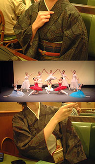

|
■2003/10/20/(Mon)09:33
着物でバレエ
|

先週、友達のバレエの発表会を見に行ってまいりました。
久しぶりのイベントなので、も一人の友人と
「よっしゃ着物着てイコ〜！」「わふ〜ん！」と盛り上がり、バレエを見に行くという本題を忘れそうな勢い。
当日は着物で車運転してきた友人。着物で高速！粋過ぎです。
そしてメインのバレエ。
友人はチョコチョコチョ♪チョコチョコチョ♪と舞台を跳ねておりました。
素敵だわー。素敵オーラが出てました。
と、幕が下りて、彼女に会いにいったら恐ろしい化粧でした。
舞台化粧って怖い…アイラインがとんでもないとこに引いてありました。
客席から見るとフツーなのに…。歌舞伎の隈取り状態。
しっかし、私の着物姿はご出勤風。
打ち上げでママとチーママの中間の中ママと言われ…。
|
| |